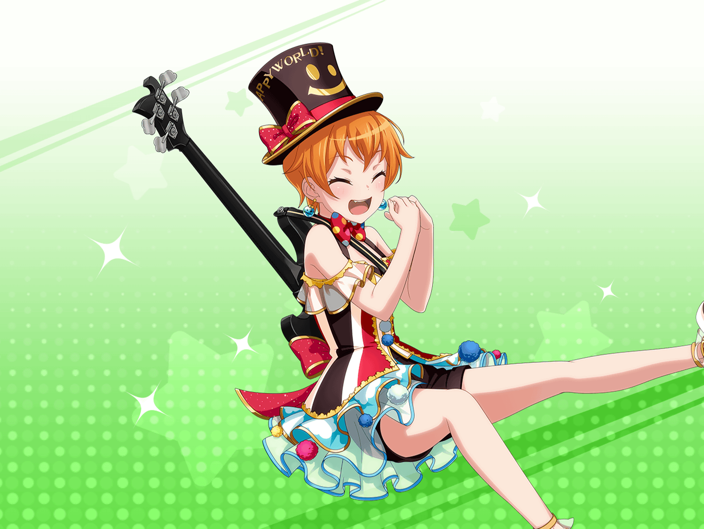
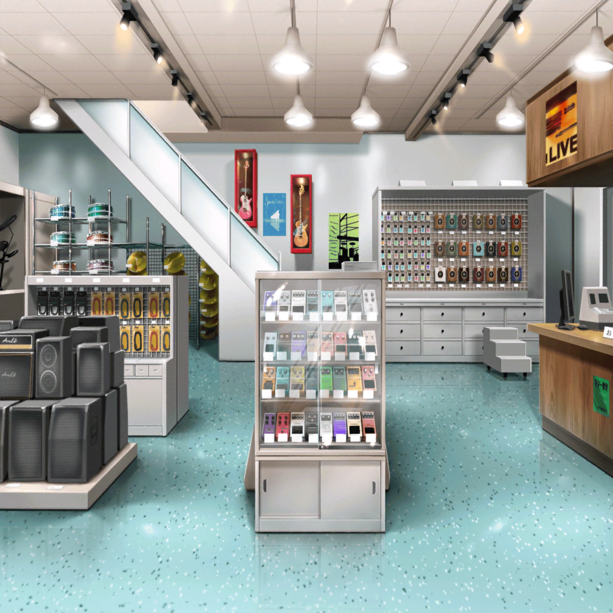

江戸川楽器店
はぐみ
このエフェクターにはそういう効果があるんだね！
それじゃあこっちのは？
はぐみ
ふんふん、なるほど……これは音にうねりを加える……
んー……うねり？
わかんない……！
はぐみ
あ、これかわいい！
はぐみ、このエフェクターにしようかな！
はぐみ
へえ、これは空間系っていうんだね。
ハロハピの曲でも使える？
なら、これ買う！
はぐみ
いやー、いい買い物ができたよ。
よかった、{{userName}}さんがいてくれて！
はぐみ
はぐみ１人だったら、どのエフェクターにしていいか
ぜんっぜんわかんなかったもん！
はぐみ
兄ちゃんに衣装を新しくするって話したらさ、
ついでにエフェクターを新しく買ってみればって言われて
それで見に来たんだ
はぐみ
エフェクター使うと音の幅が広がるからおもしろいって
兄ちゃん言ってたし！
はぐみ
新しい衣装と新しいエフェクターで
ライブやるのすっごい楽しみ！
はぐみ
あのね、まだみんなにはナイショなんだけど
ライブですっごいことするんだよ！
はぐみ
ミッシェルが空飛んだり
こころんが瞬間移動したり！
はぐみ
……って、あ！
なんでもない！
ミッシェルは空飛ばないよ！！
はぐみ
マジックじゃない！
マジックなんてはぐみ達しないよ〜！
はぐみ
新衣装とマジックは無関係だし、
はぐみがさっき言ったことぜーんぶ忘れて〜！
はぐみ
ホントに！？
ホントに忘れてくれた！？
はぐみ
ふぅ、よかった。
こころん達と新衣装を着るまでは
誰にも言わないようにって約束してたんだ！
はぐみ
だから、今日のことは忘れてね！
あ、楽器屋さんで一緒にエフェクター選んだことは
覚えててね！
はぐみ
はぐみたちがマジックすることは忘れてね！
あ、また言っちゃった！
さっきの言葉も忘れて！
はぐみ
約束だよ〜！
絶対だからねっ！